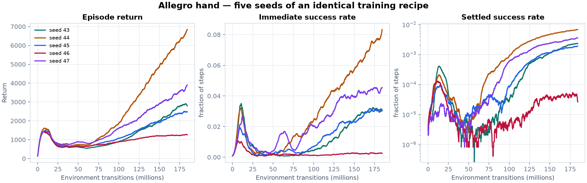
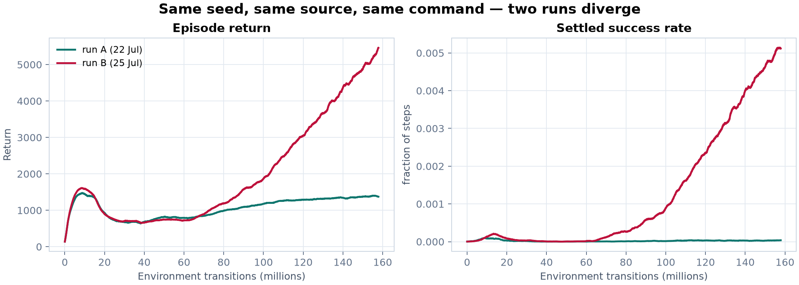
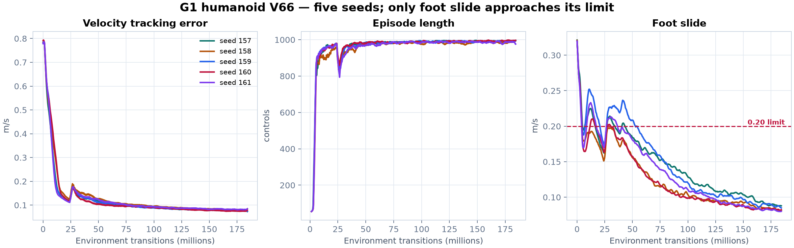

Newton reinforcement-learning report
Five seeds per task, and what they show
Both benchmark tasks were retrained from scratch at five seeds each under an identical recipe, then evaluated against their frozen acceptance contracts. The headline result is not about either policy: it is that single-run pass/fail verdicts on these tasks carry far less information than the surrounding process assumed.
Snapshot generated 2026-07-26 12:10 UTC · all times UTC · CPU-rendered plots from immutable training logs
Finding 1 — the hand's acceptance contract has no feasible solution
Fifteen evaluation cases were run: five training seeds × three held-out evaluation seeds, 512 episodes each. Not one passes the full contract. That alone would be unremarkable. What matters is why: the contract's task-success requirement and its motion-quality limits are mutually exclusive across every policy observed.
| Quality limit | Cases meeting it | Their settled-success scores |
|---|---|---|
orientation_error q95 ≤ 1.50 | 1 / 15 | 5 / 512 |
action_rate mean ≤ 1.00 | 3 / 15 | 4, 5, 5 / 512 |
near_goal_hover q95 ≤ 0.20 | 5 / 15 | 4, 5, 380, 388, 393 / 512 |
Every case meeting the orientation-error or action-rate limit comes from seed 46 — a policy that settles the cube 5 times in 512 episodes, i.e. one that does not perform the task. Of the eight cases that clear the success bar of 256, zero meet either limit.
the constraints are in direct tension
Across all 15 cases, settled success and action rate correlate at
r = +0.983. Reorienting and holding a cube requires moving the fingers;
the action_rate ≤ 1.00 limit selects for policies that barely move.
- r, settled vs action rate
- +0.983
- r, settled vs action-rate q95
- +0.914
- Best case meeting 2 of 3 limits
- seed 46 — 5 / 512
what the policies can actually do
Median settled successes per training seed, over three held-out evaluation seeds:
- Seed 44
- 460 / 512 (90%)
- Seed 47
- 388 / 512 (76%)
- Seed 43
- 262 / 512 (51%)
- Seed 45
- 220 / 512 (43%)
- Seed 46
- 5 / 512 (1%)
Seeds 44 and 47 comfortably exceed the success requirement — 90% and 76% against a 50% bar. They are rejected for moving too briskly while doing so. This is worth stating plainly: the contract as written cannot be satisfied by a policy that performs the task, and the preceding chain of task revisions was iterating against a target with an empty feasible region.
The honest scope of that claim: it holds across everything observed here — 15 cases, 5 seeds, one training recipe. A materially different recipe might reach a behaviour that satisfies both. Nothing in this data suggests where that would be.
Finding 2 — the hand recipe is unreliable, seed to seed
Five runs of a byte-identical recipe produce policies spanning 1% to 90% task success. The gated metric varies by 115×.


| Training seed | Settled / 512 (3 eval seeds) | Median | Clears success bar |
|---|---|---|---|
| 43 | 262, 253, 265 | 262 | 2 / 3 |
| 44 | 459, 460, 463 | 460 | 3 / 3 |
| 45 | 220, 219, 253 | 220 | 0 / 3 |
| 46 | 5, 5, 4 | 5 | 0 / 3 |
| 47 | 380, 393, 388 | 388 | 3 / 3 |
Within a training seed, evaluation is tight — seed 44 scores 459/460/463 across three independent held-out seeds. The variance is introduced in training, not measurement. Any single-seed verdict on this task is a draw from this distribution reported as though it were a property of the method.
Finding 3 — training is not reproducible on this hardware
Two runs of the same seed, same source, same command, same lockfile diverge from iteration 1 in the fifth decimal and end 4× apart.

This is ordinary GPU floating-point non-determinism — reduction
order is not fixed — amplified by the learning dynamics. It has a specific consequence for
the tooling around these runs: the surrounding protocol machinery pins SHA-256 hashes of
metrics.jsonl and treats them as run identity. Those hashes can never reproduce.
They certify that a run happened, not that it can be repeated.
Finding 4 — the humanoid's gate fails good runs about a quarter of the time
The humanoid is the opposite case: the policy is stable and the gate is not. Five V66 seeds; four pass all 11 training windows, one fails.


converged behaviour is reproducible
- Tracking error
- 0.0754 – 0.0816 (1.08×)
- Episode length
- 987.2 – 993.3 (1.01×)
- Termination rate
- 0.0073 – 0.0137
- Windows passed
- 11/11 on seeds 157, 158, 160, 161
one fragile limit drives every rejection
Of 99 window × limit cells, exactly one sits within 3σ of its threshold.
- Cell
model1600foot slide- Mean ± σ
- 0.1892 ± 0.0170, limit 0.20
- Distance
- 0.63σ → ~26% crossing probability
- Observed
- 1 of 5 seeds crossed (0.2160)
- Next-tightest cell
- 3.10σ
Seed 159 exceeded the foot-slide limit by 8% at iteration ~1,575, then recovered completely and finished indistinguishable from the others. Under the protocol's fail-fast rule that run is killed mid-training and the revision declared rejected — on a transient the policy sheds by 75M transitions. The gate therefore carries roughly a 25% false-rejection rate concentrated in a single early threshold.
σ is estimated from five seeds and is correspondingly noisy; treat 25% as an order of magnitude, corroborated by the 1-in-5 direct observation rather than established by it.
What this means for the two tasks
dexterous hand
The policy problem is real: 1 run in 5 collapses entirely. But the contract cannot be satisfied by any working policy, so tightening the recipe against it is not a path forward. The orientation-error and action-rate limits need to be re-derived from what competent behaviour actually looks like before any further revision is meaningful.
humanoid
Converged behaviour is stable and reproducible. The single fragile early foot-slide limit should be widened or moved later; it is measuring a transient of early learning, not a property of the final policy. More seeds will not help here — the variance is in the gate, not the policy.
Both conclusions point the same way. A long chain of task revisions was evaluated one seed at a time against thresholds that were never checked for feasibility or for sensitivity to run-to-run noise. Much of the accept/reject signal in that chain was noise, and in the hand's case the target was unreachable throughout.
Provenance
Hand: 5 seeds × 7,500 PPO iterations, 184,320,000 transitions each, 1,024 environments.
Source newton-gym-v16 @ 46c1852.
Humanoid: 5 seeds × 7,501 PPO iterations, 184,344,576 transitions each. Source
final-v66-v16 @ fb4f1ce. The hand pipeline is byte-identical between
the two working trees; only newton_gym/tasks/g1.py differs.
Evaluation: 512 episodes per case, 64 environments, horizon 300, contract
newton_gym.policy_quality_contract v3. Machine-readable results in
assets/status.json; file digests in SHA256SUMS.